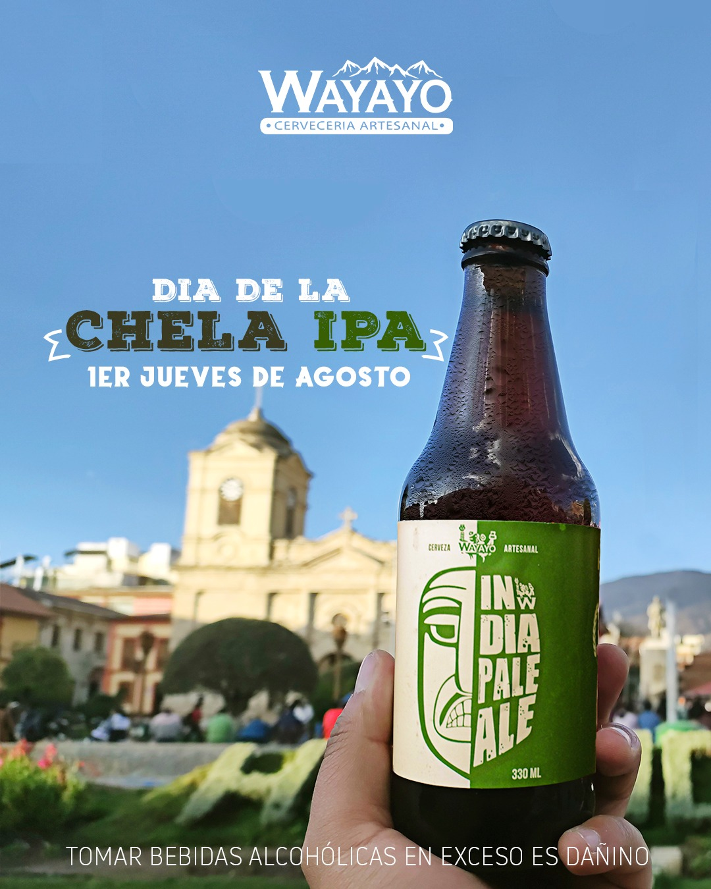

Descubre el sabor auténtico de la cerveza artesanal
Nuestra misión es anticipar y satisfacer las necesidades de nuestros consumidores, ofreciéndoles productos y experiencias excepcionales a través de la innovación constante, creando valor y superando sus expectativas en cada interacción.
La cervecería artesanal Wayayo es el máximo representante en el mercado cervecero artesanal en la región Junín.
Wayayo es un refugio para los amantes de la cerveza artesanal, donde la pasión por la elaboración se une a la tradición y la innovación. Nos dedicamos a crear cervezas de la más alta calidad utilizando ingredientes seleccionados y métodos sostenibles. Ofrecemos una variedad de estilos que reflejan la esencia de nuestra tierra, y nuestro acogedor taproom es el lugar perfecto para disfrutar con amigos y familiares.
El mejor bar al estilo wanka en Huancayo
Cervecería Wayayo desde el 2016 rinde tributo a las mujeres y hombres del maravilloso Valle del Mantaro, quienes con su arduo trabajo nos motivan a elaborar las mejores cervezas hechas con agua pura de manantial, maltas, lúpulos y levaduras de la mejor calidad.
Innovar constantemente en sabores y ofrecer productos de alta calidad.